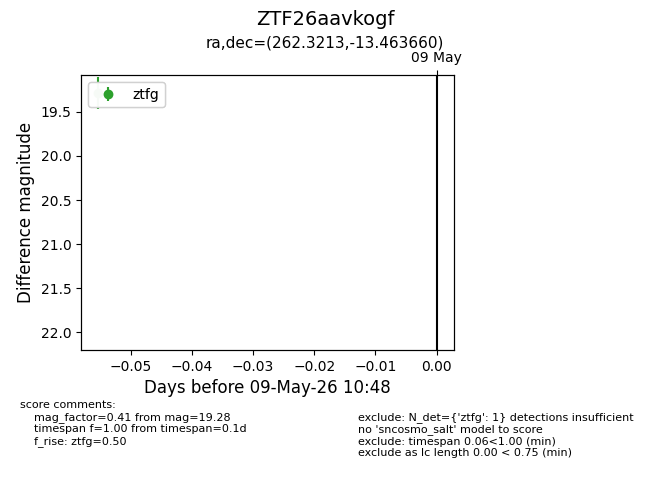
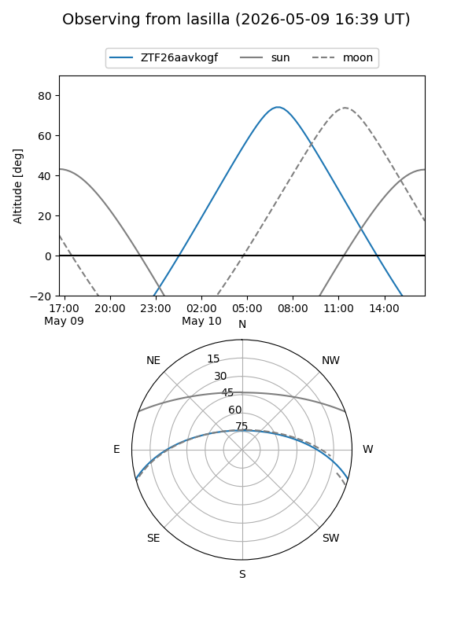
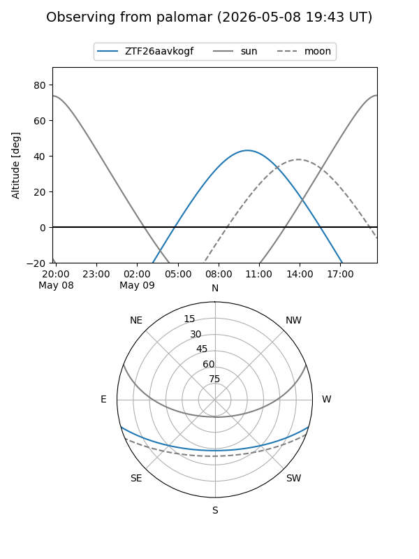

ZTF26aavkogf
Target ZTF26aavkogf at 2026-05-09 10:49
Aliases and brokers:
FINK: link
Lasair: link
ALeRCE: link
alt names
ZTF26aavkogf (ztf,fink_ztf)
Coordinates:
equatorial (ra, dec) = 262.3213,-13.46366
equatorial (HMS+DMS) = 17:29:17.12,-13:27:49.17
galactic (l, b) = (11.2114,+11.39013)
Flags:
Photometry:
last ztfg=19.28
1 ztfg detections
Lightcurve

Visibility


Additional plots